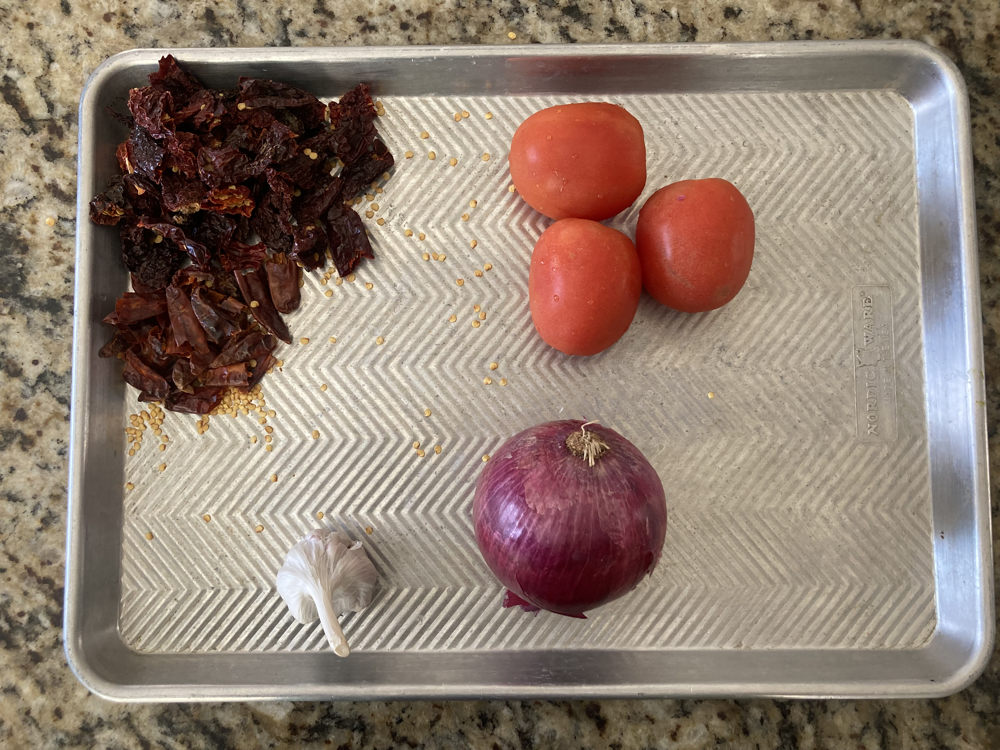
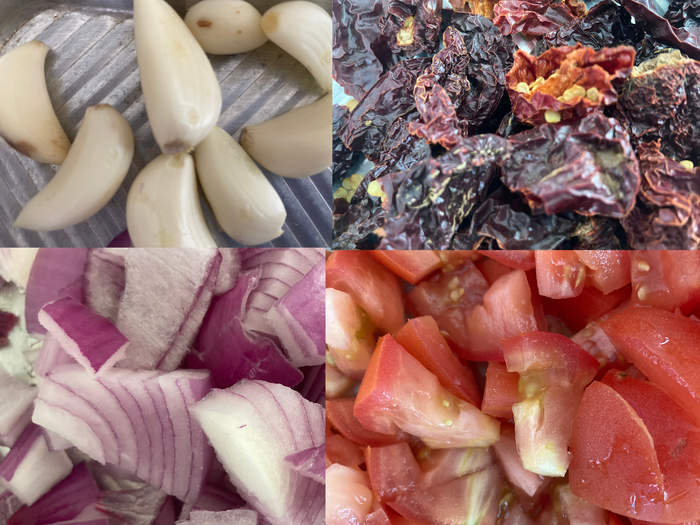
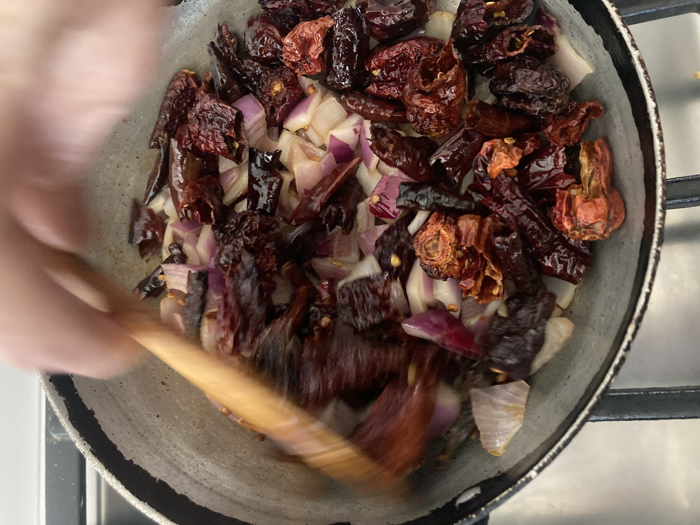
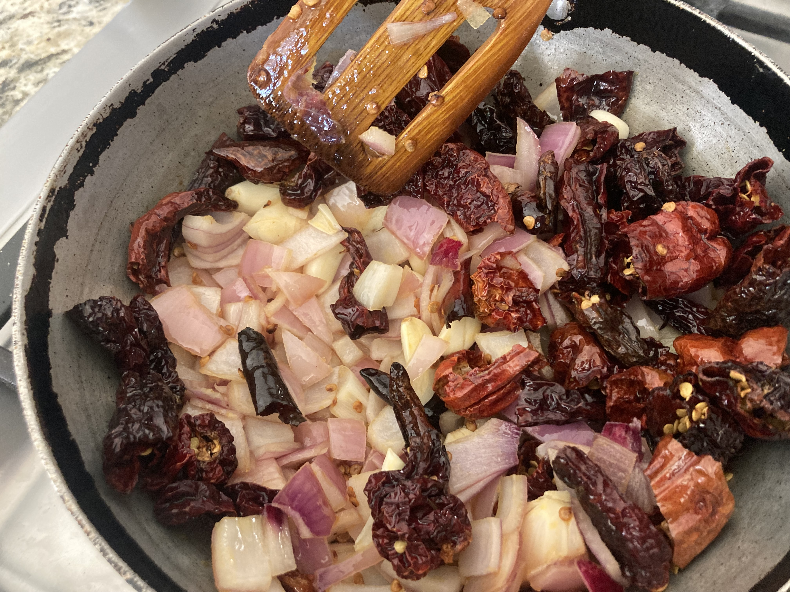
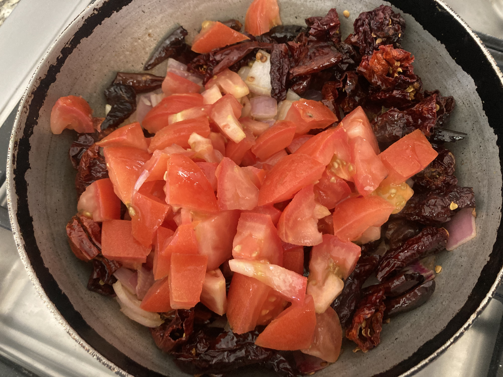
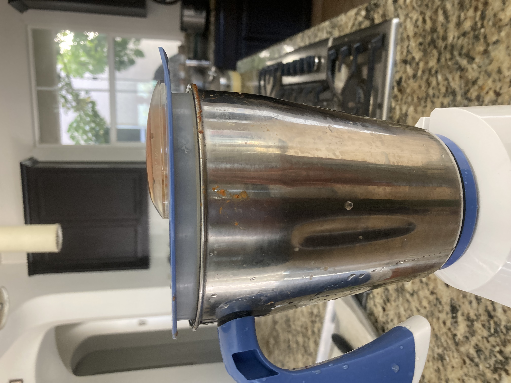
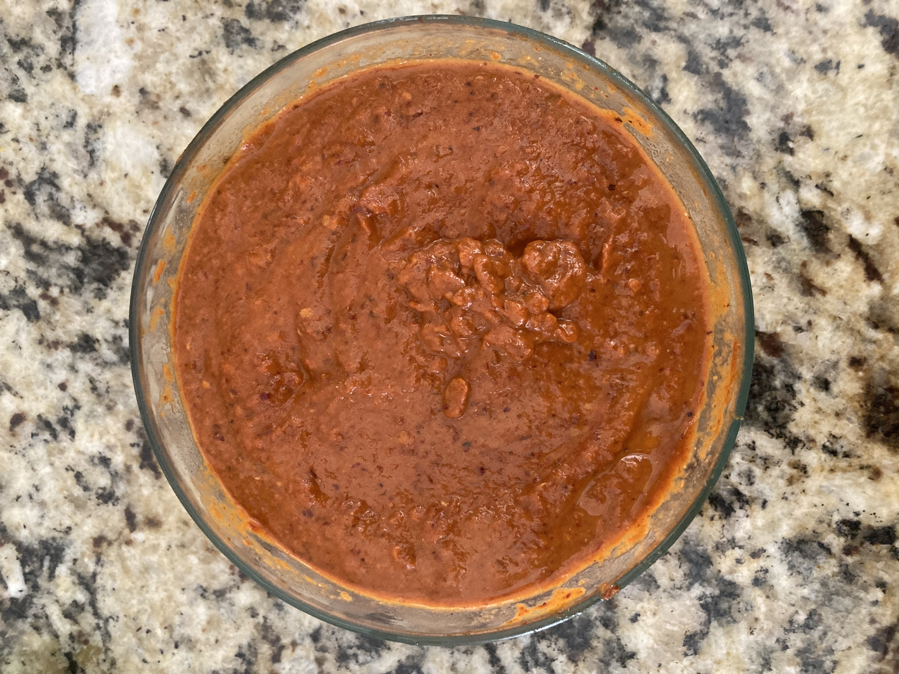
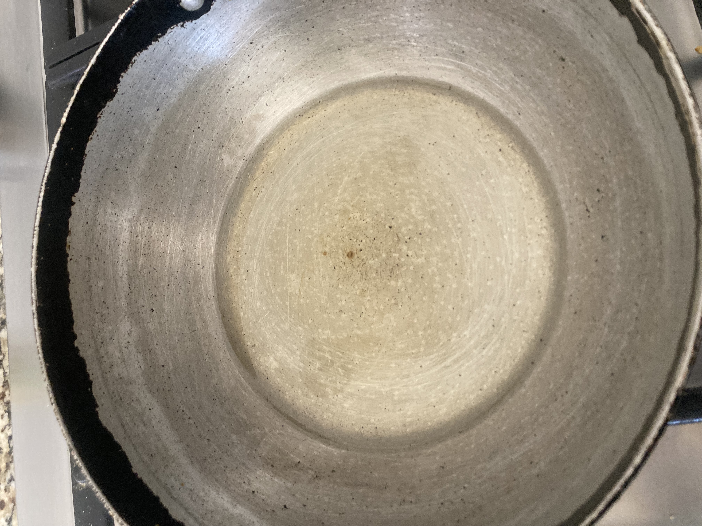
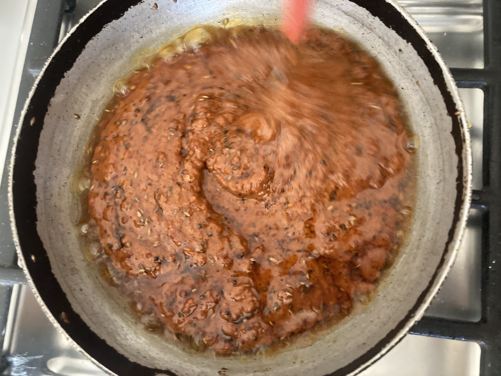

Description
A Hot and Spicy chutney served for breakfast. It's great for Idlies and Dosa.
Ingredients
- 1 Onion, 3 Tomatoes,30 kashmiri chillies, 1 whole garlic.
- 2 tbsp oil for Saute
- 15 tbsp oil for Tempering
- 1tsp jeera/cumin seeds
- 1tsp mustard seeds
Instructions
- Cut ,Cube and Peel the onion, tomato, chilli and garlic.
- Add oil and Saute onion pieces along with chilli pieces for 2 mins.
- Add garlic pieces too and saute for 2 more mins.
- Add tomato pieces and saute for 5 mins and let it cool for 30mins.
- Pour all the the sauted mixture into mixer and make a smooth paste.
- Karam Paste is ready for Tempering/Tadka/Tiragamatha.
- Put 15 TBSP of oil, add jeera and mustard to the oil and let it splutter.And add the karam paste.
- Let it stay on stove for some mins until the rawness is gone.
- Stir once in a while.
- Final ready-to-serve Yerra Karam is ready.
- The Ingredients specified makes Karam for 30 dosas. You can refrigerate for 2 weeks.